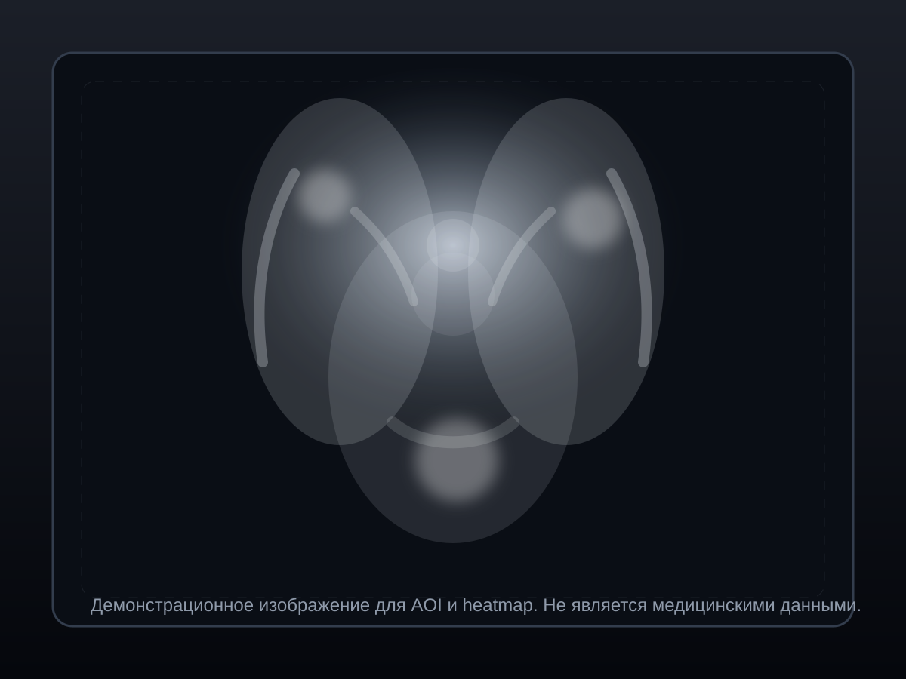

Управление
Камера и landmarks
Инициализация…Рабочая область исследования
Зона: —
Выполнить калибровку, затем начать сессию и анализ.

A1
A2
A3
B1
B2
B3
C1
C2
C3
Метрики сессии
СтатусНажмите «Включить камеру»
КалибровкаНе выполнена
Режим сессииНе запущена
Сырые координаты—
Точек в сессии0
Время наблюдения0.0 c
Фиксации0
Моргания0
Распределение по AOI
Фиксация: нет| Зона | Время, c | Доля |
|---|